<!doctype html>
<html>
<head>
<meta charset="utf-8">
<title>查询</title>
<style>
body{cursor:url('cur/biao/min1.cur'),auto;}
</style>
</head>

<body>

<script>
	var a;
	alert("可查询景点:九寨沟，黄果树瀑布，鸣沙山，天山天池，神龙架等....");
a=prompt("请输入你想查询的景点名字","");

if(a=="九寨沟"){document.write("<li><a href='_01.html'>首页</a></li><p>九寨沟</p>九寨沟风景名胜区位于四川省阿坝藏族羌族自治州南坪县境内，距离成都市400多公里，是一条纵深40余公里的山沟谷地，因周围有9 个藏族村寨而得名，总面积约620平方公里，大约有52％的面积被茂密的原始森林所覆盖。林中夹生的箭竹和各种奇花异草，使举世闻名的大熊猫、金丝猴、白唇鹿等珍稀动物乐于栖息在此。沟中地僻人稀，景物特异，富于原始自然风貌，有“童话世界”之誉。有长海、剑岩、诺日朗、树正、扎如、黑海六大景区，以翠海、叠瀑、彩林、雪峰、藏情这五绝而驰名中外"+"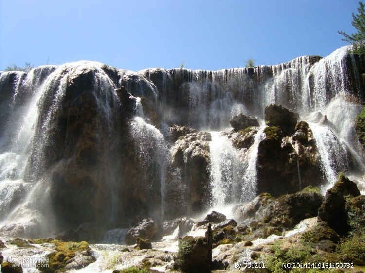");}
if(a=="黄果树瀑布"){document.write("<li><a href='_01.html'>首页</a></li><p>黄果树瀑布</p>黄果树瀑布位于37公里的镇宁、关岭布依族、苗族自治县的交界处，海拔600-1500米，降雨量1300毫米，风光秀丽、奇峰叠起、浩浩荡荡的白水河，骤然间由断崖上跌落，形成九级瀑布。黄果树瀑布是这些瀑布群中最壮美的一个，它高74米、宽81米,涨水时节，如蛟龙翻腾、浪花飞溅、水珠飞扬；枯水时节，瀑布犹如万缕银丝披挂、轻柔多姿、又是另一番风致。还未见瀑布就感觉到满天的细雨正从瀑布方向向你扑来。在黄果树瀑布的水帘背后隐匿着一条百米长的水帘洞，洞内除了千奇百怪的钟乳石外，还有洞厅、洞窗和洞泉，真是暗藏天宝精华之地。其中的摸瀑台像外伸展数米，站在摸瀑台的前端伸手及可摸到瀑布飞流而下的瀑帘，震天的响声让你感觉到大地都在随着瀑布的脉搏震动。瀑布下的犀牛潭可让人踩入水中，从瀑布下端的最近距离感觉这大自然的神奇，惊叹这鬼斧神工般的黄果树"+"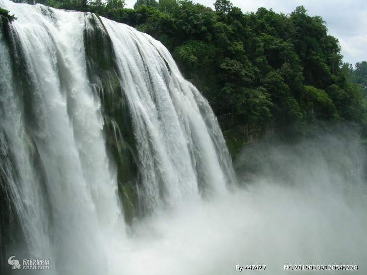");}
if(a=="鸣沙山"){document.write("<li><a href='_01.html'>首页</a></li><p>鸣沙山</p>鸣沙山像一条巨龙，横卧在敦煌城南。山体由流沙堆积而成。它像金子一样灿黄，绸缎一样柔软，少女一样娴静，凤凰一样美丽！它东起莫高窟，西止睡佛山下的党河水库，绵延40多公里，南北广布20多公里，最高处海拔1715米。远远望去，峰峦高低起伏，如刀削斧劈，景色奇丽，蔚为壮观!游人非常喜欢登鸣沙山。但要登上山顶，可真不容易，虽无攀华山之惊险，但与登泰山一样艰难！绵绵细沙，进一步，退半步，似平行而无进，只好手脚并用往上爬。登上山顶，那一道道沙峰如大海中的金色波浪，气势磅礴，汹涌澎湃。细看那山坡上的沙浪如轻波荡漾的涟漪，时而湍急，时而潺缓，时而萦回涡旋，真是迭宕有致，妙趣横生。还有那沙山下的一泓清泉，像一个妙龄少女，温存地依偎在情人的怀抱中。极目远眺，天地豁然开朗，心胸顿时开阔，童心不由萌发！下山最为有趣，顺坡而下，只觉两肋生风，一跳十步，驾空驭虚，仿佛有羽化成仙飘飘然的感觉。"+"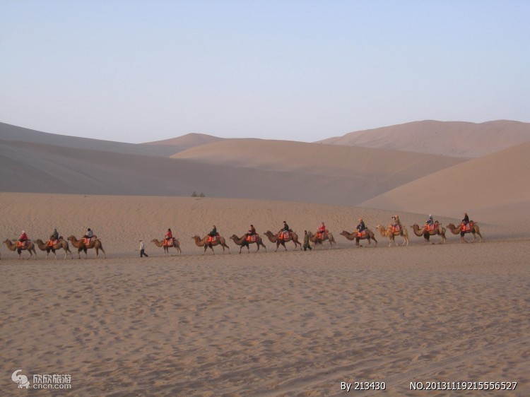");}
if(a=="天山天池"){document.write("<li><a href='_01.html'>首页</a></li><p>天山天池</P>天山天池，世界自然遗产，国家AAAAA级旅游景区，国家地质公园，国家重点风景名胜区，全国文明风景旅游区，国际人与自然生物圈保护区，中国最佳旅游去处，最佳资源保护的中国十大风景名胜区，中国十大魅力休闲旅游湖泊。天山天池古称“瑶池”，地处新疆维吾尔自治区昌吉回族自治州阜康市境内，博格达峰北坡山腰，是以高山湖泊为中心的自然风景区，距乌鲁木齐市97公里。景区规划面积548平方公里，分8大景区，15个景群，38个景点，是我国西北干旱地区典型的山岳型自然景观。天山天池湖面海拔1910米，南北长3.5公里，东西宽0.8～1.5公里，最深处103米。湖滨云杉环绕，雪峰辉映，非常壮观，为著名避暑和旅游地。天池成因有古冰蚀-终碛堰塞湖和山崩、滑坡堰塞湖两说。天山天池，雪峰倒映，云杉环拥，碧水似镜，风光如画。天山天池以完整的垂直自然景观带和雪山冰川、高山湖泊为主要特征，以远古瑶池西王母神话以及宗教和独特的民族民俗风情为文化内涵，是游览观光、科普考察、探险揽胜、休闲健身和民族风情游赏的最佳去处。"+"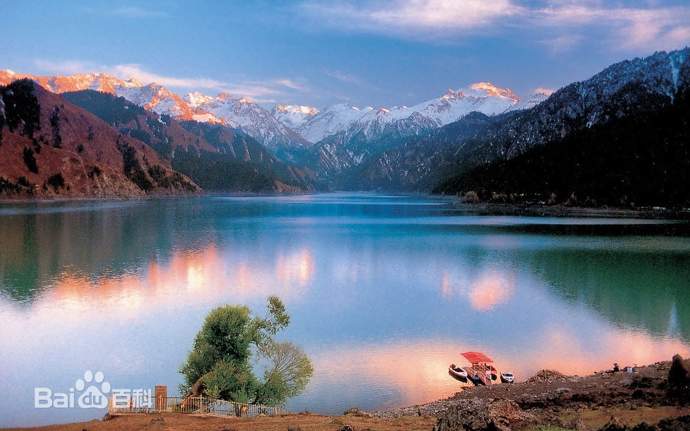");}
if(a=="神龙架"){document.write("<li><a href='_01.html'>首页</a></li><p>神龙架</p>神农架林区，简称神农架，1970年经国务院批准建制，直属湖北省管辖，是中国唯一以“林区”命名的行政区划。于武当山，神农架，长江三峡组成的旅游带上。神农架林区位于湖北省西部，东与湖北省襄阳市保康县接壤，西与重庆市巫山县毗邻，南依兴山、巴东而濒长江三峡，北倚十堰市房县.竹山县，远眺武当山风景区。地跨东经109°56′～110°58′，北纬31°15′～31°75′，全区总面积3253平方公里，坐拥联合国“世界地质公园”，辖6镇2乡和1个国家级自然保护区、1个国有森工企业林业管理局、1个国家湿地公园，林地占85%以上。2013年，神农架林区全区实现地区生产总值18.5745亿元，比2012年增长9.8%。其中：第一产业增加值1.7723亿元，比2012年增长5.0%；第二产业增加值7.6665亿元，比2012年增长9.7%；第三产业增加值9.1357亿元，比2012年增长10.9%。三次产业结构比重由2012年的9.8：42.1：48.1调整为9.5：41.3：49.2。神农架是中国首个获得联合国教科文组织人与生物圈自然保护区、世界地质公园、世界遗产三大保护制度共同录入的“三冠王”名录遗产地。2016年7月17日，正在土耳其伊斯坦布尔举行的第40届世界遗产大会上，中国湖北神农架被列入世界遗产名录，成为湖北省第1处、中国第11处世界自然遗产。"+"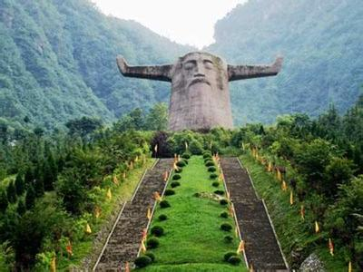");}
if(a=="张家界"){document.write("<li><a href='_01.html'>首页</a></li><p>张家界</P>张家界是湖南省辖地级市，原名大庸市，辖2个市辖区（永定区、武陵源区）、2个县（慈利县、桑植县）。位于湖南西北部，澧水中上游，属武陵山区腹地。[1]  张家界因旅游建市，是中国最重要的旅游城市之一，是湘鄂渝黔革命根据地的发源地和中心区域。1982年9月，张家界国家森林公园成为中国第一个国家森林公园。1988年8月，张家界武陵源风景名胜区被列入国家重点风景名胜区；1992年，由张家界国家森林公园等三大景区构成的武陵源风景名胜区被联合国教科文组织列入《世界自然遗产名录》；2004年2月，被列入全球首批《世界地质公园》；2007年，被列入中国首批国家5A级旅游景区。"+"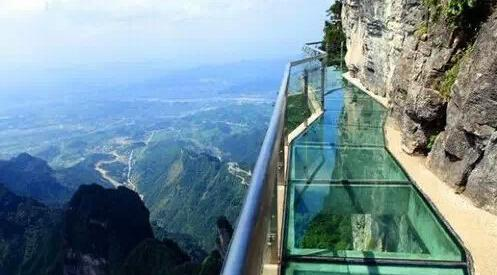");}
if(a=="西双版纳"){document.write("<li><a href='_01.html'>首页</a></li><p>西双版纳</P>西双版纳傣族自治州，位于中华人民共和国云南省最南端，是云南省下辖的一个少数民族自治州。地处北纬约21°10’，东经99°55’至101°50’之间，属北回归线以南的热带湿润区。东西面与江城县、普洱市相连；西北面与澜沧县为邻；东南部、南部和西南部分别与老挝、缅甸山水相连，邻近泰国和越南，与泰国的直线距离仅200余公里。东距太平洋的北部湾400多公里，西距印度洋的孟加拉湾600余公里。边界线长达966.3公里，约等于云南省边境线总长的1/4。“西双”是傣语“12”的意思，“版纳”是指比县小一些的行政区域，“西双版纳”意为“十二个行政区”。西双版纳，古代傣语为“勐巴拉娜西”，意思是“理想而神奇的乐土”，这里以神奇的热带雨林自然景观和少数民族风情而闻名于世，是中国的热点旅游城市之一。每年的泼水节于4月13-15日举行，被誉为“东方狂欢节”。西双版纳有中国唯一的热带雨林自然保护区，气候温暖湿润，树木葱茏，蔓藤盘根错节，不少珍禽异兽，如亚洲象，犀鸟，孔雀，黑冠杉臂猿都生活在这片热带丛林里。而西双版纳特有和稀有的植物中有望天树、红光树、云南肉豆蔻、四薮木、黄果木、胡桐、美登木、三尖杉等等。"+"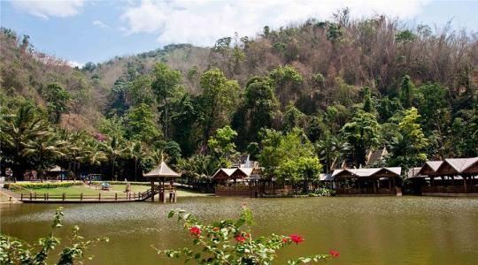"+"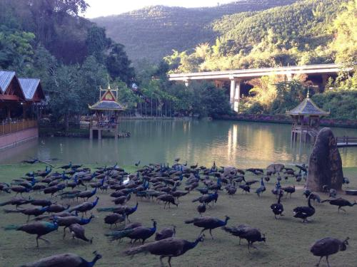");}
if(a=="九华山"){document.write("<li><a href='_01.html'>首页</a></li><p>九华山（国家自然与文化双遗产、国家5A级旅游景区）</P> 编辑九华山（Jiuhua Mountain），古称陵阳山、九子山，为“中国佛教四大名山”之一，位于安徽省池州市青阳县境内，素有“东南第一山”之称，传说因唐朝李白《望九华赠青阳韦仲堪》诗：“昔在九江上，遥望九华峰。天河挂绿水，秀出九芙蓉。”而更名为“九华山”。 九华山为皖南三大山系之一，主体是由花岗岩岩体组成的强烈断隆带。其边缘地区除部分为沉积岩外，大都是由花岗闪长岩组成的褶皱断块轻度隆起带。九华山地处北亚热带，不仅受到湿润季风的影响，而且受到山区海拔高度、地形地势的制约，所以具有温和、湿润、阴凉等山区气候特点。九华山北俯长江，南望黄山，东临太平湖，西接池阳，绵亘一百余公里，主要有九十九峰，最高的十王峰海拔1342米。九华山区域总面积约120平方公里，大致呈南-北走向，介于东经117°43′-118°80′，北纬30°24′-30°40′之间。九华山自山麓至天台峰，名刹古寺林立，文物古迹众多，尚存化城寺、月身宝殿、慧居寺、百岁宫等古刹78座，佛像1500余尊，藏有明万历皇帝颁赐的圣旨、藏经及其它玉印、法器等文物1300余件。2006年，以九华山为主体的九华山风景名胜区被评为国家重点风景名胜区。 2007年，九华山风景区获评为国家AAAAA级旅游景区.2009年，九华山获评为国家地质公园。"+"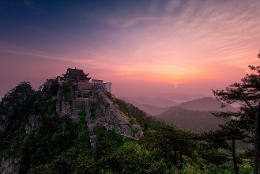");}
if(a=="嵩山"){document.write("<li><a href='_01.html'>首页</a></li><p>嵩山 （五岳之一） </P>嵩山，古称“外方”，夏商时称“崇高”、“崇山”，西周时成称为 “岳山”，以嵩山为中央左岱（泰山）右华（华山），定嵩山为中岳，始称“中岳嵩山”。[1]  嵩山位于河南省西部，地处登封市西北面，西邻古都洛阳，东临郑州，属伏牛山系[2]  。介于东经112°56′07″～113°11′32″，北纬34°23′31″～34°35′53″。嵩山总面积约为450平方公里，由太室山与少室山组成，共72峰，海拔最低为350米，最高处为1512米。主峰峻极峰位于太室山，高1491.7米；最高峰连天峰位于少室山，高1512米。嵩山北瞰黄河、洛水，南临颍水、箕山，东通郑汴，西连十三朝古都洛阳，是古京师洛阳东方的重要屏障，素为京畿之地，具有深厚文化底蕴，是中国佛教禅宗的发源地和道教圣地。嵩山曾有30多位皇帝、150多位著名文人所亲临。《诗经》有“嵩高惟岳，峻极于天”的名句。嵩山是中华文明的重要发源地，也是中国名胜风景区，为五岳中的中岳。2004年2月，嵩山被联合国教科文组织列入世界地质公园。[3] "+"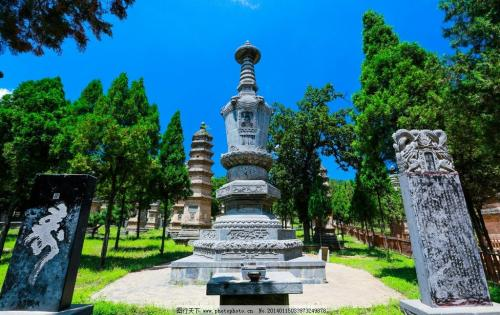");}
if(a=="黄山"){document.write("<li><a href='_01.html'>首页</a></li><p>黄山（世界文化与自然双重遗产，国家5A级旅游景区）</p>黄山：世界文化与自然双重遗产，世界地质公园，国家AAAAA级旅游景区，国家级风景名胜区，全国文明风景旅游区示范点，中华十大名山，天下第一奇山。黄山位于安徽省南部黄山市境内，有72峰，主峰莲花峰海拔1864米，与光明顶、天都峰并称三大黄山主峰，为36大峰之一。黄山是安徽旅游的标志，是中国十大风景名胜唯一的山岳风光。黄山原名“黟山”，因峰岩青黑，遥望苍黛而名。后因传说轩辕黄帝曾在此炼丹，故改名为“黄山”。黄山代表景观有“四绝三瀑”，四绝：奇松、怪石、云海、温泉；三瀑：人字瀑、百丈泉、九龙瀑。黄山迎客松是安徽人民热情友好的象征，承载着拥抱世界的东方礼仪文化。明朝旅行家徐霞客登临黄山时赞叹：“薄海内外之名山，无如徽之黄山。登黄山，天下无山，观止矣！”被后人引申为“五岳归来不看山，黄山归来不看岳”。"+"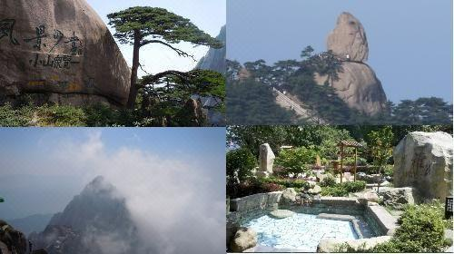"+"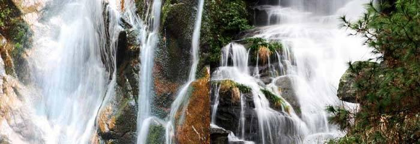");}
if(a=="泰山"){document.write("<li><a href='_01.html'>首页</a></li><p>泰山（世界文化与自然双重遗产，国家5A级旅游景区）</P>本词条介绍的是泰山山体本身，如需查询泰山景区信息，请参阅“泰山风景名胜区”词条。泰山又名岱山、岱宗、岱岳、东岳、泰岳，位于山东省中部，隶属于泰安市，绵亘于泰安、济南、淄博三市之间，总面积24200公顷。主峰玉皇顶海拔1545米，气势雄伟磅礴，有“五岳之首”、“五岳之长”、“天下第一山”之称。是世界自然与文化遗产，世界地质公园，国家AAAAA级旅游景区，国家级风景名胜区，全国重点文物保护单位，全国文明风景旅游区。泰山被古人视为“直通帝座”的天堂，成为百姓崇拜，帝王告祭的神山，有“泰山安，四海皆安”的说法。自秦始皇开始到清代，先后有13代帝王引次亲登泰山封禅或祭祀，另外有24代帝王遣官祭祀72次。泰山宏大的山体上留下了20余处古建筑群，2200余处碑碣石刻。道教、佛教视泰山为“仙山佛国”，神化泰山，在泰山建造了大量宫观寺庙。泰山是中华民族的象征，是东方文化的缩影，是“天人合一”思想的寄托之地，是中华民族精神的家园。"+"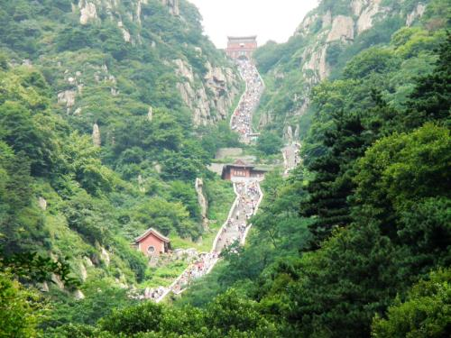");}
if(a=="衡山"){document.write("<li><a href='_01.html'>首页</a></li><p>衡山 （国家自然与文化双遗产，国家5A级旅游景区）</P>衡山（Mount Heng），又名南岳、寿岳、南山，为中国“五岳”之一，位于中国湖南省中部偏东南部，绵亘于衡阳、湘潭两盆地间,，主体部分在衡阳市南岳区和衡山、衡阳县境内。衡山的命名，据战国时期《甘石星经》记载，因其位于星座二十八宿的轸星之翼，“变应玑衡”，“铨德钧物”，犹如衡器，可称天地，故名衡山。衡山是中国著名的道教、佛教圣地，环山有寺、庙、庵、观200多处。衡山是上古时期君王唐尧、虞舜巡疆狩猎祭祀社稷，夏禹杀马祭天地求治洪方法之地。衡山山神是民间崇拜的火神祝融，他被黄帝委任镇守衡山，教民用火，化育万物，死后葬于衡山赤帝峰，被当地尊称南岳圣帝。道教“三十六洞天，七十二福地”，有四处位于衡山之中，佛祖释迦牟尼两颗真身舍利子藏于衡山南台寺金刚舍利塔中。衡山主要山峰有回雁峰、祝融峰、紫盖峰、岳麓山等，最高峰祝融峰海拔1300.2米。衡山主体部分介于北纬27°4′-27°20′，东经112°34′-112°44′之间，呈东北—西南走向，北起衡山县福田铺乡，南迄衡阳县樟木乡，西起衡阳县界牌镇，东止衡阳市南岳区，长38千米，最宽处17千米，总面积640平方千米。1982年，衡山风景区被列入第一批国家级重点风景名胜区名单；2006年2月，衡山入选首批国家自然与文化双遗产名录；2007年5月，衡山风景区被评为首批国家5A级旅游景区；2007年8月，衡山被列为国家级自然保护区。"+"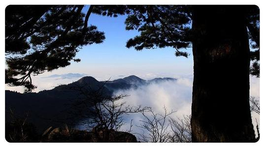");}
if(a=="华山"){document.write("<li><a href='_01.html'>首页</a></li><p>华山 （五岳之西岳华山）</P>华山（Mount Hua），古称“西岳”，雅称“太华山”，为中国著名的五岳之一，中华文明的发祥地，“中华”和“华夏”之“华”，就源于华山。位于陕西省渭南市华阴市，在省会西安以东120千米处。南接秦岭，北瞰黄渭，自古以来就有“奇险天下第一山”的说法。华山是第一批国家重点风景名胜区，国家AAAAA级旅游景区，全国重点文物保护单位。华山是中华民族的圣山。中华之“华”，源于华山，由此，华山有了“华夏之根”之称。这一成果首先被孙中山所引用，创立“中华民国”。据清代国学大师章太炎和历代专家学者考证：华夏民族最初形成并居住于“华山之周”，名其国土曰华，其后人迹所至，遍及九州，华之名始广。华山是道教主流全真派圣地，为“第四洞天”，也是中国民间广泛崇奉的神祇，即西岳华山君神。共有72个半悬空洞，道观20余座，其中玉泉院、都龙庙、东道院、镇岳宫被列为全国重点道教宫观，有陈抟、郝大通、贺元希等著名的道教高人。1982年，华山被国务院颁布为首批国家级风景名胜区；1991年，华山被国家旅游局评为四十佳旅游胜地之一；1999年，华山被中央文明委、建设部、国家旅游局命名为全国文明风景旅游区示范点；2004年，华山被评为中华十大名山； 2011年，华山被国家旅游局评为国家AAAAA级旅游景区。2017年6月29日，华山荣膺“2017中国最受欢迎旅游景区”殊荣。华山是神州九大观日处之一，观日处位于华山东峰（亦称朝阳峰），朝阳台为最佳地点。"+"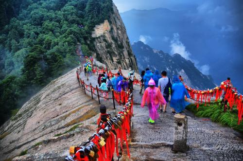");}
if(a=="宝天曼"){document.write("<li><a href='_01.html'>首页</a></li><p>宝天曼</P>宝天曼生态旅游区，位于河南省南阳市内乡县北部，宝天曼以她独特的风景和原始森林为主，空气负氧离子含量12000个每立方厘米，是休闲度假的好地方。宝天曼以遮天蔽日的原始森林和众多的野生动植物而饮誉中原，成为同纬度生态结构保存最为完整的地区和河南省生物多样性的分布中心，被誉为“天然的物种宝库”，“中州的一颗明珠”。宝天曼保护区地理位置独特，是我国唯一的长江、黄河、淮河三个水系的分水岭，也是我国中部地区保存最为完整的自然综合基因库。1988年保护区被国务院批准为“国家级自然保护区”，2001年联合国教科文组织宣布宝天曼为“世界生物圈保护区”。"+"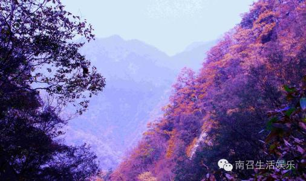");}
if(a=="苏州园林"){document.write("<li><a href='_01.html'>首页</a></li><p>苏州古典园林</p>苏州园林（世界文化遗产）一般指苏州古典园林苏州古典园林，简称苏州园林，是世界文化遗产之一，国家AAAAA级旅游景区，中国十大风景名胜之一，素有“园林之城”，享有“江南园林甲天下，苏州园林甲江南”之美誉，誉为“咫尺之内再造乾坤”，是中华园林文化的翘楚和骄傲，是中国园林的杰出代表。苏州古典园林始于春秋时期吴国建都姑苏时，形成于五代，成熟于宋代，兴旺鼎盛于明清。到清末苏州已有各色园林170多处，现保存完整的有60多处，对外开放的有19处，主要有沧浪亭、狮子林、拙政园、留园、网师园、怡园等园林。苏州古典园林在世界造园史上有其独特的历史地位和价值，以写意山水的高超艺术手法，蕴含浓厚的中国传统思想和文化内涵，是东方文明的造园艺术典范。"+"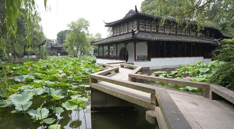"+"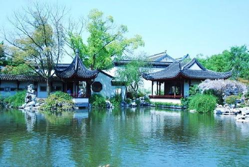");}
if(a=="平遥古城"){document.write("<li><a href='_01.html'>首页</a></li><p>平遥古城（历史文化古城、世界文化遗产、5A风景区）</P>平遥古城位于山西省中部平遥县内，始建于西周宣王时期（公元前827年～公元前782年）。山西平遥被称为“保存最为完好的四大古城”之一，也是中国仅有的以整座古城申报世界文化遗产获得成功的两座古城市之一。2009年，平遥古城被世界纪录协会评为中国现存最完整的古代县城。2015年7月13日，平遥古城成为国家5A级旅游景点。平遥古城是中国古代城市在明清时期的杰出范例，平遥古城保存了其所有特征。而且，在中国历史的发展中，为人们展示了一幅非同寻常的文化、社会、经济及宗教发展的完整画卷。（联合国教科文世界遗产委员会）2017年11月19日，获得年度旅游目的地声誉奖。"+"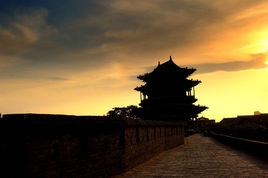");}
if(a=="八达岭长城"){document.write("<li><a href='_01.html'>首页</a></li><p>八达岭长城</P>八达岭长城，位于北京市延庆区军都山关沟古道北口。是中国古代伟大的防御工程万里长城的重要组成部分，是明长城的一个隘口。八达岭长城为居庸关的重要前哨，古称“居庸之险不在关而在八达岭”。明长城的八达岭段被称作“玉关天堑”，为明代居庸关八景之一。八达岭长城是明长城向游人开放最早的地段，八达岭景区以八达岭长城为主，兴建了八达岭饭店和由江泽民主席亲笔题名的中国长城博物馆等功能齐全的现代化旅游服务设施。八达岭景区是全国文明风景旅游区示范点，以其宏伟的景观、完善的设施和深厚的文化历史内涵而著称于世，是举世闻名的旅游胜地。2016年7月29日开始，八达岭长城向现役军人、残疾军人免收门票。"+"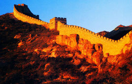");}

</script>
</body>
</html>
